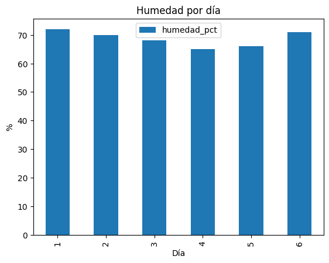

Pandas: 2.3.3
Directorio de trabajo: /home/svogt/repos/curso_python_2026/dia_4Clase 8 — Procesamiento de Datos con Pandas
Al final de esta clase podrás:
DataFrame desde estructuras Python.plot()Ejecuta la celda de abajo (una vez).
Pandas: 2.3.3
Directorio de trabajo: /home/svogt/repos/curso_python_2026/dia_4Series: 1 columnaDataFrame: tabla (múltiples columnas)DataFrame (desde un diccionario)Un caso común: cada columna es una lista con la misma longitud.
| ciudad | poblacion_millones | region | |
|---|---|---|---|
| 0 | Concepción | 0.23 | Biobío |
| 1 | Santiago | 5.60 | RM |
| 2 | Valdivia | 0.17 | Los Ríos |
| 3 | La Serena | 0.21 | Coquimbo |
DataFrame (lista de diccionarios)Cada fila es un diccionario:
DataFrameHerramientas mínimas:
df.head() / df.tail()df.shape (filas, columnas)df.columnsdf.info() (tipos y nulos)| ciudad | poblacion_millones | region | |
|---|---|---|---|
| 0 | Concepción | 0.23 | Biobío |
| 1 | Santiago | 5.60 | RM |
| 2 | Valdivia | 0.17 | Los Ríos |
| 3 | La Serena | 0.21 | Coquimbo |
<class 'pandas.core.frame.DataFrame'>
RangeIndex: 4 entries, 0 to 3
Data columns (total 3 columns):
# Column Non-Null Count Dtype
--- ------ -------------- -----
0 ciudad 4 non-null object
1 poblacion_millones 4 non-null float64
2 region 4 non-null object
dtypes: float64(1), object(2)
memory usage: 228.0+ bytesCon df2:
shapedf["columna"] (devuelve Series)df[["c1", "c2"]] (devuelve DataFrame)df.iloc[i] → fila i (por posición)df.iloc[i:j] → rango de filas(Hoy lo usamos de forma mínima.)
Un patrón esencial:
Puedes crear columnas nuevas a partir de otras:
.describe()Para columnas numéricas, describe() entrega un resumen básico.
(No es estadística avanzada; es inspección rápida.)
pathlib a Pandas: crear y leer un CSVFlujo típico:
data/)pd.read_csv(...)PosixPath('data/mediciones.csv')Escrito: data/mediciones.csv | existe: TrueSeries.plot(...) y DataFrame.plot(...)Ejemplo: humedad por día (barras).
Un caso común: resumir por grupos.
Ejemplo: promedio de score por grupo.
Con df_loaded:
temp_F (Fahrenheit) a partir de temperatura_Ctemp_F vs dia con título y etiquetas de ejesVas a trabajar con un dataset pequeño de “ventas” (CSV):
data/head, info, columns)DataFrame# Creamos un CSV de ejemplo para el ejercicio (no editar)
sales_path = data_dir / "ventas.csv"
df_sales = pd.DataFrame({
"dia": [1, 1, 2, 2, 3, 3, 4, 4],
"producto": ["A", "B", "A", "B", "A", "B", "A", "B"],
"unidades": [10, 6, 12, 7, 9, 10, 14, 8],
"precio_unitario": [1200, 900, 1200, 900, 1200, 900, 1200, 900],
})
df_sales.to_csv(sales_path, index=False)
print("Listo:", sales_path)Listo: data/ventas.csv| dia | producto | unidades | precio_unitario | |
|---|---|---|---|---|
| 0 | 1 | A | 10 | 1200 |
| 1 | 1 | B | 6 | 900 |
| 2 | 2 | A | 12 | 1200 |
| 3 | 2 | B | 7 | 900 |
| 4 | 3 | A | 9 | 1200 |
<class 'pandas.core.frame.DataFrame'>
RangeIndex: 8 entries, 0 to 7
Data columns (total 4 columns):
# Column Non-Null Count Dtype
--- ------ -------------- -----
0 dia 8 non-null int64
1 producto 8 non-null object
2 unidades 8 non-null int64
3 precio_unitario 8 non-null int64
dtypes: int64(3), object(1)
memory usage: 388.0+ bytes| dia | producto | unidades | precio_unitario | |
|---|---|---|---|---|
| 0 | 1 | A | 10 | 1200 |
| 2 | 2 | A | 12 | 1200 |
| 4 | 3 | A | 9 | 1200 |
| 6 | 4 | A | 14 | 1200 |
| dia | producto | unidades | precio_unitario | ingreso | |
|---|---|---|---|---|---|
| 0 | 1 | A | 10 | 1200 | 12000 |
| 1 | 1 | B | 6 | 900 | 5400 |
| 2 | 2 | A | 12 | 1200 | 14400 |
| 3 | 2 | B | 7 | 900 | 6300 |
| 4 | 3 | A | 9 | 1200 | 10800 |
producto
A 54000
B 27900
Name: ingreso, dtype: int64Hoy ya puedes:
DataFrame).plot()Próximo paso: combinar esto con archivos + limpieza + transformaciones en clases de procesamiento de datos.